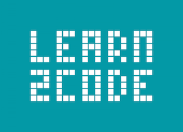
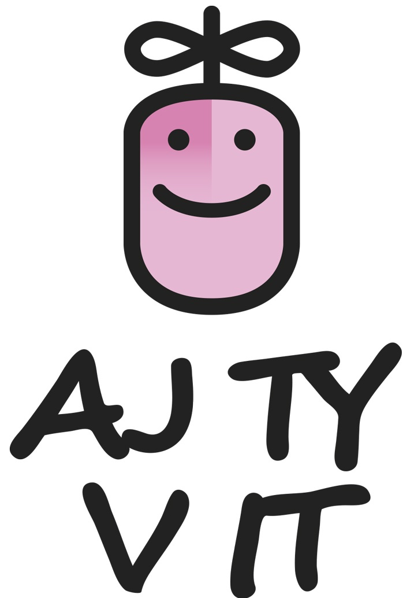
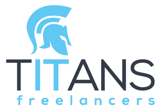
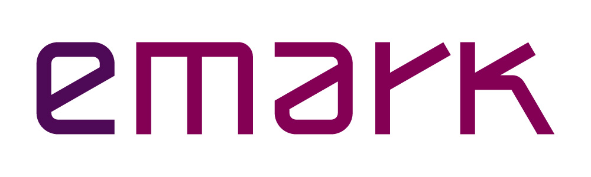

Join the 5th Rails Girls in Bratislava! During the free one-day workshop we'll dive into the magical world of building web applications with Ruby on Rails. It's going to be wicked awesome!
SORRY, APPLICATIONS ARE CLOSED :(
You learn designing, prototyping and coding with the help from our coaches.
You need your own laptop, curiosity and a sprinkle of imagination!
Want to help? We are looking for volunteers and Rails coaches. Email us.
| 9:00 - 9:45 |
Registration, coffee and installation festDuring the morning we’ll install Ruby on Rails on your computer. |
|---|---|
| 9:45 - 10:15 |
WelcomeOutline of the day & word from sponsors |
| 10:15 - 10:45 |
Understanding Web AppsLet's get coding! We will give you an introduction to basic concept of web programming. What we’ll learn and how it all fits together. |
| 11:00 - 13:00 |
WORKSHOPJumpstart your first web application, coaches will help you get started. |
| 13:00 - 14:00 | Lunch |
| 14:00 - 14:30 |
Lightning talks from coachesEliska Cejpova: TBA Ramon Huidobro: Git and Version Control Tony Bangratz: Rails in the Real World |
| 14.30- 17:00 |
WORKSHOPExtend your application. Some serious app building will happen here! |
| 18:30 - |
Afterparty!Open for everyone, meet cool people interested in tech. We start at HubHub |
How much does the workshop cost? Nothing, it's free! You just need to be excited!
Who is this aimed for? Women of any age with basic knowledge of working with a computer. We’ve had people of all ages taking part. Most of the speeches are given in english, but small group work is done in slovak and english. Please bring your laptop.
Can men attend? Yes, but you need to be accompanied by an interested lady. Also, girls are given a priority.
I know how to program - How can I help? We’re also looking for people to be coaches. We’ll have a two-three hour workshop before the event to walk you through the curriculum. Email us
Is there a Code of Conduct? Yes! In short, Rails Girls Bratislava is dedicated to a harassment-free workshop experience for everyone. Our full anti-harassment policy can be found at: www.railsgirls.com/bratislava_coc
Location: HubHub Bratislava, Twin City B, Mlynské Nivy 14, Bratislava
 V Learn2Code učíme ľudí designovať a programovať moderné webstránky a mobilné aplikácie. Robíme prezenčné aj online kurzy na Slovensku a v Čechách.
 Ženy a dievčatá v informatike. Ako ich sem dostať? Projekt Aj Ty v IT vznikol s cieľom povzbudiť dievčatá k štúdiu informatiky a následnému zamestnaniu v danom odbore.
Rails Girls Bratislava is co-organized with our awesome sponsors and partners. Want to help? We're looking for partners & sponsors for the non-profit event! Email us!
With the heart of pioneers, we create the most innovative areas where startups, corporations, investors and enthusiasts can find what they are looking for.

TITANS freelancers je jedným z popredných nezávislých poskytovateľov IT služieb v oblasti outsourcingu IT špecialistov. Ak potrebujete pružne prispôsobovať veľkosť Vašich IT kapacít, zvyšovať výkonnosť Vášho IT oddelenia alebo znižovať mzdové náklady, TITANS freelancers Vám ponúka extra svaly pre Vaše IT projekty.
Freelancerom ponúkame množstvo jedinečných projektov v oblasti IT.
 Accenture je popredná globálna spoločnosť poskytujúca široké spektrum odborných služieb a riešení v oblasti strategických, konzultačných, digitálnych a technologických služieb a služieb v oblasti prevádzky podnikov. S viac ako 401,000 zamestnancami na celom svete poskytujeme služby klientom vo viac ako 120 krajinách. Na Slovensku pôsobíme už 25 rokov a zamestnávame približne 1.700 ľudí.
Accenture je popredná globálna spoločnosť poskytujúca široké spektrum odborných služieb a riešení v oblasti strategických, konzultačných, digitálnych a technologických služieb a služieb v oblasti prevádzky podnikov. S viac ako 401,000 zamestnancami na celom svete poskytujeme služby klientom vo viac ako 120 krajinách. Na Slovensku pôsobíme už 25 rokov a zamestnávame približne 1.700 ľudí.
 ASBIS SK je najväčším distribútorom informačných a telekomunikačných technológií a taktiež najväčším IT distribútorom s pridanou hodnotou na Slovensku. Svojim zákazníkom okrem klasickej distribúcie IT produktov ponúka aj na mieru šité komplexné riešenia. ASBIS SK má vo svojom širokom portfóliu viac ako 60 značiek.
ASBIS SK je najväčším distribútorom informačných a telekomunikačných technológií a taktiež najväčším IT distribútorom s pridanou hodnotou na Slovensku. Svojim zákazníkom okrem klasickej distribúcie IT produktov ponúka aj na mieru šité komplexné riešenia. ASBIS SK má vo svojom širokom portfóliu viac ako 60 značiek.
Spoločnosť Webglobe - Yegon poskytuje webhostingové a cloud riešenia, registráciu domén, prevádzku a správu serverov. Hostuje firemné weby, e-shopy, blogy, veľké portály či prezentácie. Pre jednotlivcov a freelancerov, malé tímy, či zabehnuté podniky.
 GitLab is an application to code, test, and deploy code together. It provides Git repository management with fine grained access controls, code reviews, issue tracking, activity feeds, wikis, and continuous integration.
GitLab is an application to code, test, and deploy code together. It provides Git repository management with fine grained access controls, code reviews, issue tracking, activity feeds, wikis, and continuous integration.
 Spoločnosť Emark je kompetenčné, implementačné a vzdelávacie centrum pre Qlik Sense, QlikView a všetky relevantné súvisiace nástroje a nadstavby (reporting, planning, web analytics, mapping, Big Data...). Od roku 2007 sme najskúsenejší autorizovaný Qlik partner na Slovensku a v Česku, aktívny tiež v iných krajinách Európy. Venujeme sa výhradne riešeniam Data Discovery na platforme Qlik.
robime.it je portál pre IT ľudí, ale aj pre tých, ktorí s IT úzko spolupracujú. Nájdete u nás 300+ blogov od 60+ blogerov zo sveta IT, tipy a rady pre odborný a kariérny rast. Nájdeme vám dobrých kolegov.
Rails Girls sa uskutočnili v Bratislave prvýkrát v roku 2013. Odvtedy toto skvelé podujatie organizujeme každý rok. Pozrite si fotky z predchádzajúcich edícií: